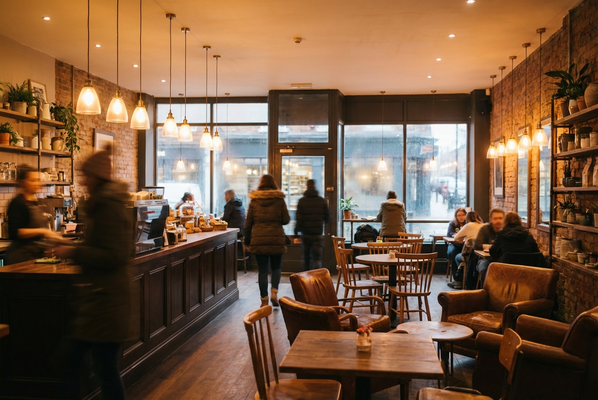

Our Story
How It All Began
Juniper & Stone was born from a dream shared over countless cups of coffee. In 2019, longtime friends Elena Marsh and David Chen left their corporate careers to pursue something more meaningful—a place where community and craft could flourish together. They found the perfect spot in a century-old brick building that once housed a neighborhood bakery.
The name reflects their vision: juniper for resilience and renewal, stone for strength and permanence. After months of careful renovation, they opened the doors to a space that honors the building's history while embracing a fresh, modern aesthetic.
Our Space
Step inside and you'll find a warm, welcoming atmosphere designed for comfort and connection. Natural light pours through large windows, plants add life to every corner, and the aroma of fresh coffee fills the air.

Our Mission
We exist to create moments of genuine connection through exceptional coffee and thoughtful hospitality. Every decision we make—from the music we play to the beans we brew—is guided by our commitment to quality, sustainability, and community.
We believe a café should be more than a transaction. It should be a third place between home and work where neighbors become friends and strangers feel welcome. Our team is trained not just in coffee technique, but in the art of making people feel seen.
Sourcing Philosophy
We partner directly with small-scale farmers in Guatemala, Ethiopia, and Colombia who share our values of environmental stewardship and fair labor practices. Our roasting partner, a family-owned operation in Oakland, develops custom profiles that highlight each origin's unique character.
Our pastries feature organic flour from a regional mill, eggs from pasture-raised hens, and seasonal fruits from nearby farms. We're proud that over 70% of our ingredients travel fewer than 200 miles to reach your plate.